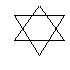

Question:
Using six matchsticks of equal length, construct at least 4 equilateral triangles in two dimensions. Note - you cannot break the matchsticks! Also, you can assume that the matchsticks are thin enough, so that if they overlap, they are still in "two dimensions". Solutions with more than 4 triangles will be given extra credit!Answer:
6 triangles. Let us know if you can make more. Note, we specified non-overlapping triangles. This figure actually has 8 equilateral triangles, but only 6 of them are non-overlapping!This figure isn't exact, but that's the general idea.
